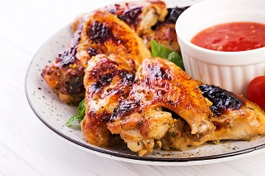
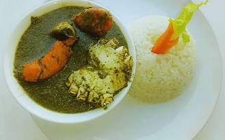
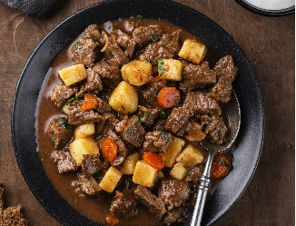

Zambezian Chicken

Ingredients
- 1 whole chicken (cut in halves or quarters)
- 1 cup coconut milk
- 4 garlic cloves (minced)
- 2 lemons (juice)
- 1 tsp paprika
- 1 tsp chili flakes (optional)
- Salt and pepper to taste
Instructions
- Prepare Marinade: Mix coconut milk, garlic, lemon juice, paprika, chili flakes, salt, and pepper.
- Marinate: Coat the chicken and let it marinate for at least 2 hours (preferably overnight).
- Grill: Cook over medium heat on a grill, basting with leftover marinade until golden and cooked through.
- Serve: Pair with steamed rice, cassava, or a fresh salad.
Matapa with shrimp

Ingredients
- 2 cups cassava leaves (finely chopped or ground)
- 1 lb shrimp (peeled and cleaned)
- 1 cup coconut milk
- 1/4 cup peanuts (ground)
- 1 small onion (chopped)
- 2 garlic cloves (minced)
- 2 tbsp vegetable oil
- Salt to taste
Instructions
- Cook the Cassava Leaves: In a pot, heat oil and sauté onion and garlic. Add cassava leaves and cook for 5 minutes.
- Add Coconut and Peanuts: Stir in coconut milk and ground peanuts. Simmer for 15–20 minutes.
- Add Shrimp: Mix in shrimp, season with salt, and cook until shrimp are pink and tender (about 5–7 minutes).
- Serve: Enjoy with rice or xima (Mozambican cornmeal).
Beef stew
Ingredients
- 1 lb beef (cubed)
- 1 cup coconut milk
- 2 tomatoes (chopped)
- 1 onion (chopped)
- 3 garlic cloves (minced)
- 1 tsp curry powder
- 2 tbsp vegetable oil
- Salt and pepper to taste
Instructions
- Sauté Aromatics: Heat oil in a pot. Sauté onion and garlic until fragrant.
- Cook Beef: Add beef cubes, curry powder, salt, and pepper. Brown the meat.
- Simmer: Add tomatoes and coconut milk. Cover and simmer for 30–40 minutes until beef is tender.
- Serve: Pair with rice, xima, or bread.